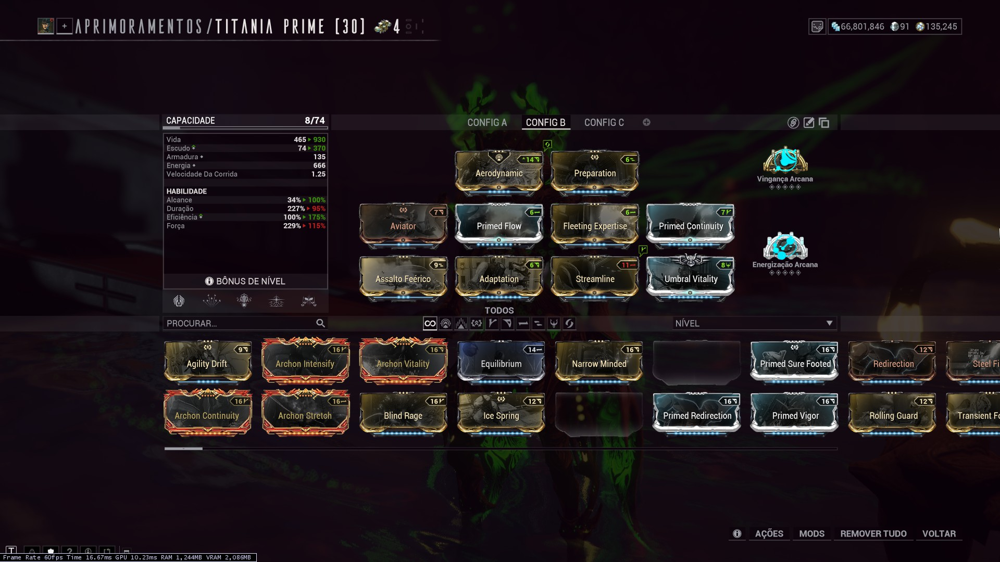
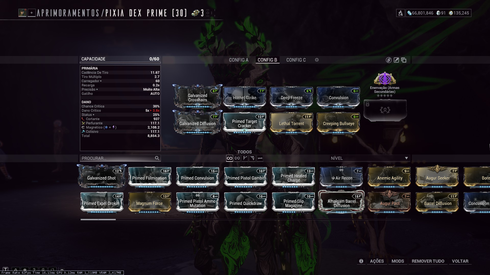
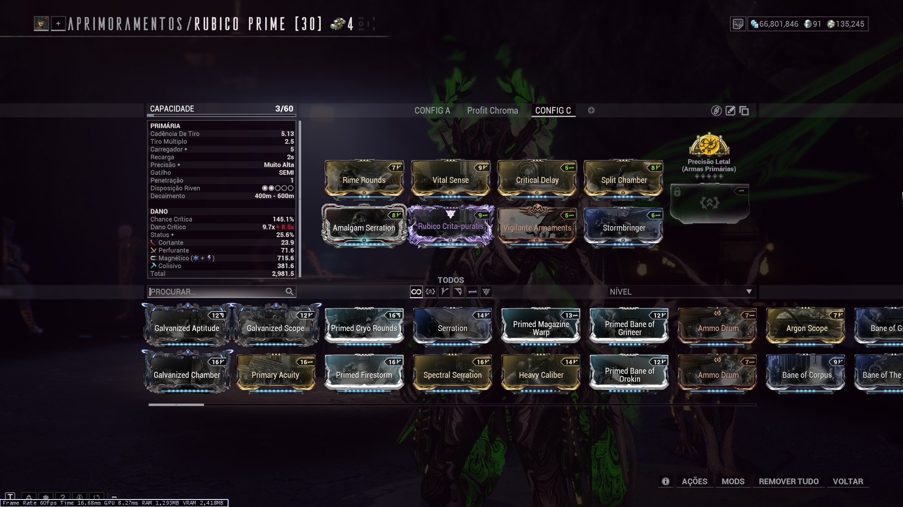

Equipamentos
O que levar para a caçada: Warframes, armas, Operador e Amp.
Warframes
Não há um warframe específico recomendado para o confronto. Tecnicamente, qualquer warfame pode ser utilizado. Warfranes que trazem algum tipo de sobrevivência ou aprimoramento de dano são as opções mais utilizadas, mas é particular ao gosto e conforto do jogador. Minha escolha é Titania/Prime por, além da sobrevivência e dano, também ter mobilidade.
Titania/Prime


Armas
Também não há uma arma específica recomendada. Qualquer arma pode ser utilizada, mas armas com alto dano são as opções mais utilizadas. Nota que os pontos fracos da Usurpadora são fracos contra dano  Magnético. O exemplo de build a seguir pode ser utilizado como base para quase qualquer arma que desejar utilizar.
Magnético. O exemplo de build a seguir pode ser utilizado como base para quase qualquer arma que desejar utilizar.

Há também utilidade em trazer armas de dano em área para controle das Raknóides de Refrigeração na segunda fase.
Outros equipamentos
Outros equipamentos são pouco relevantes para o combate. Existem opções de conforto, como um operador forte para auxiliar no controle, arcanos de regeneração de vida, e coisas do tipo, mas não são necessários para o sucesso na missão.